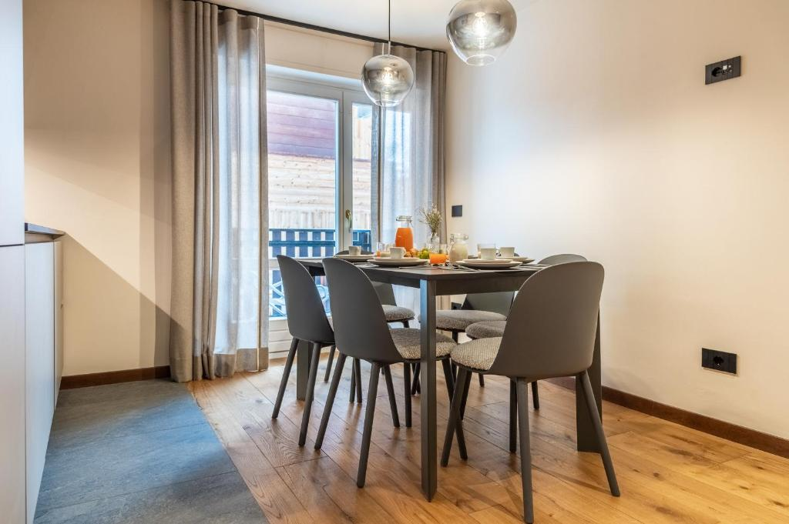
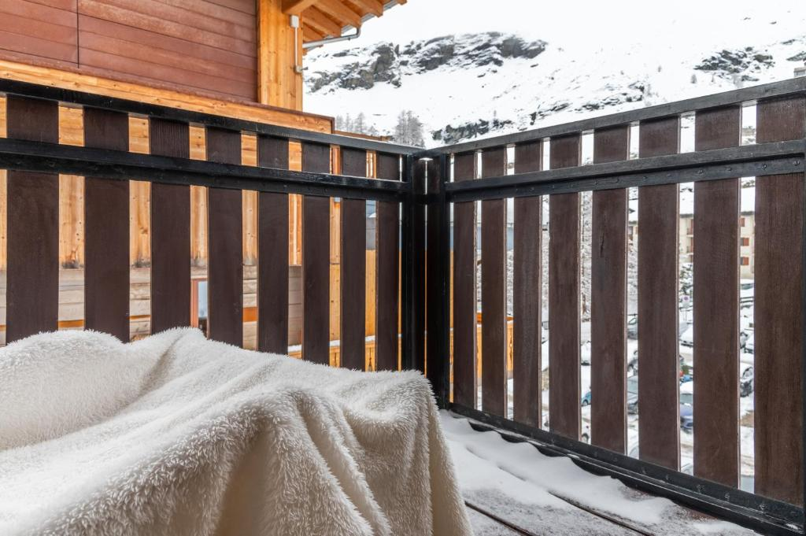

🏠 הדירה
HelloCHALET – Front Row with balcony overlooking the Cretaz slopesVia J. B. Bich 16, 11021 Breuil-Cervinia
ציון Booking: 10 (2 ביקורות בלבד)
☎ +39 327 611 4775 · מנוהל ע״י HelloCHALET
דף הנכס ב-Booking
🧾 ההזמנה
One-Bedroom Apartment with Balcony · ללא ארוחות6 אורחים (4 מבוגרים + 2 ילדים)
סה״כ €3,658 (כ-US$4,089 כולל מסים)
היום: €0 · Booking יחייב €3,598 אוטומטית ב-5.1.2027 (Mastercard ••8135)
ביטול חינם עד 7.1.2027 23:59
🕓 צ׳ק-אין / צ׳ק-אאוט
צ׳ק-אין: א׳ 7.2.2027, 16:00–20:00הגעה 20:00–01:00 – בתוספת תשלום
צ׳ק-אאוט: ו׳ 12.2.2027, 08:00–10:00
בצ׳ק-אין: תעודה מזהה + כרטיס אשראי
👨👩👧👦 המשפחה
אילון ושרון, יהלי (21), מאיה (18), עמרי (15), בר (11)כולם ברמה בינונית (כחול/אדום)
🚗 באותו טיול ב-Booking: רכב שכור ממילאנו (VW T-Roc, US$210.65) – ⚠️ עדיין רשום ל-7–12.3, צריך לשנות לפברואר
📸 תמונות




תמונות: Booking.com
📆 תאריכים חשובים
- 5.1.2027 Booking מחייב €3,598 אוטומטית ל-Mastercard ••8135
- 7.1.2027 23:59 מועד אחרון לביטול חינם. מ-8.1.2027 ביטול עולה כ-US$3,742.
- ~31.1.2027 הנכס גובה פיקדון נזקים €500 (מוחזר), 7 ימים לפני ההגעה
- ~2.2.2027 מועד הביטול החינמי של Fortini (אותם תאריכים)
- 7.2.2027 16:00 צ׳ק-אין (עד 20:00 ללא תוספת) · איסוף הרכב במילאנו (⚠️ ההשכרה עדיין רשומה למרץ)
- 12.2.2027 10:00 צ׳ק-אאוט והחזרת הרכב
💡 החיוב (5.1) קורה יומיים לפני סוף הביטול החינמי (7.1) – ביטול עד 7.1 אמור להיות חינם גם אחרי החיוב (לפי תנאי Booking).
💶 פירוט עלות (לפי Booking, בדולרים, משוער)
| דירה (5 לילות) | ~$3,403 |
| מע״מ 10% | ~$340 |
| דמי שירות €250 | ~$279 |
| מס עיר | ~$67 |
| סה״כ | ~$4,089 = €3,658 |
|---|---|
| חיוב Booking ב-5.1.2027 | €3,598 |
כ-€732 ללילה · כ-€610 לאדם (6 נפשות). שורת "דירה" מחושבת כיתרה (סה״כ פחות מסים ודמי שירות). ההפרש של €60 בין הסה״כ לחיוב כנראה משולם בנכס (מס עיר?) – לא אומת. כלולים: מצעים וניקיון סופי. חניה פרטית – בתוספת.
חלוקה
🛏️ מיטות
| חדר שינה | מיטת קינג 1 | 2 |
| חדר שינה | מיטת קומותיים 1 | 2 |
| סלון | ספה נפתחת 1 | 2 |
| קיבולת מקסימלית | 6 | |
|---|---|---|
אין מיטות נוספות · עריסה €70. לפי Booking הקינג והקומותיים מופיעים יחד בחדר השינה – כדאי לוודא את החלוקה.
📐 מפרט
• 517 רגל² (~48 מ״ר) · חדר רחצה אחד ל-6 נפשות• מרפסת עם נוף להר/למטרהורן ולמסלולי Cretaz
• מטבח מלא, מדיח, מכונת כביסה
• Wi-Fi חינם · מצעים וניקיון סופי כלולים
🎿 שירותים
• השכרת ציוד סקי• מסעדה/בר
• חניה פרטית בגראז׳ בתשלום, כ-500 מ׳ מהדירה
• ❌ אין בריכה/ספא
• ❌ ללא ארוחות
🚡 מעליות (לפי Booking)
| Cretaz | 50 רגל (~15 מ׳) · ski-in/ski-out |
| Campetto | 20 רגל (~6 מ׳) |
| Breuil – Plan Maison | 2,450 רגל (~750 מ׳) |
| רכבל Plateau Rosà | 6 דק׳ הליכה |
הדירה במרכז הכפר להולכי רגל.
📍 פתיחה בגוגל מפות✈️ נסיעה משדות התעופה
| מילאנו מלפנסה (MXP) | ~181 ק״מ · ~2:20 ש׳ |
| מילאנו לינאטה (LIN) | ~195 ק״מ · ~2:40 ש׳ |
| טורינו (TRN) | ~121 ק״מ · ~1:45 ש׳ |
חישוב מסלול OSRM ללא פקקים ושלג. A5 עד יציאת Châtillon-Saint-Vincent ומשם כ-30 ק״מ בעמק. חובה צמיגי חורף או שרשראות ברכב (funivie.it).
מסלול ממלפנסה · מלינאטה🗺️ מפה
⚠️ המיקומים על המפה משוערים (לפי OpenStreetMap ותיאור Booking, לא נקודות מדויקות). מפה: © OpenStreetMap.
חלוקה לפי צבע (צ׳רביניה + ולטורננצ׳ה, ק״מ)
מתאים לבינוניים
הצד האיטלקי רובו אדום וכחול – מתאים בדיוק למשפחה (כחול/אדום). לפי funivie.it הכחולים הארוכים של Plateau Rosà מושלמים לבינוניים, והגלישה מ-Plateau Rosà עד Valtournenche היא מהארוכות באלפים (מעל 20 ק״מ).💡 יום לצרמט: צריך סקיפס בינלאומי. סקיפס בינלאומי שנקנה באיטליה – הכניסה הראשונה חייבת להיות במעלית איטלקית. לבדוק שעת המעלית האחרונה חזרה לצד האיטלקי.
🎟️ מחירי סקיפס 2026/27 (ימים רצופים)
| סקיפס | מבוגר | Young | Junior | משפחה (2+2+2) |
|---|---|---|---|---|
| 4 ימים · צ׳רביניה-ולטורננצ׳ה | €235.50 | €188.50 | €165.00 | €1,178 |
| 5 ימים · צ׳רביניה-ולטורננצ׳ה | €288.00 | €230.50 | €201.50 | €1,440 |
| 6 ימים · צ׳רביניה-ולטורננצ׳ה | €338.00 | €270.50 | €236.50 | €1,690 |
| 4 ימים · בינלאומי (+צרמט) | €324.00 | €259.00 | €226.50 | €1,619 |
| 5 ימים · בינלאומי (+צרמט) | €396.00 | €317.00 | €277.00 | €1,980 |
| 6 ימים · בינלאומי (+צרמט) | €464.50 | €371.50 | €325.00 | €2,322 |
| יום 1 · צ׳רביניה / בינלאומי | €64 / €88 | €51 / €70.50 | €45 / €61.50 |
💡 עם הגעה ב-7.2 אחה״צ ועזיבה ב-12.2 בבוקר, יוצאים 4 ימי סקי מלאים (8–11.2), ועוד בוקר ה-12 (צ׳ק-אאוט עד 10:00, ski-in/ski-out) – כלומר פס 4 או 5 ימים. אפשרות חסכונית: 4–5 ימים איטלקי + יום 1 בינלאומי בנפרד לצרמט (לא בדקתי אם אפשר לשדרג פס קיים). פסים איטלקיים של 3–5 ימים כוללים גם יום אחד באתר אחר בואלה ד׳אוסטה.
שתי ההזמנות פעילות לאותם תאריכים (7–12.2.2027) – צריך לבטל אחת. ירוק = יתרון.
| 🏨 Hotel Fortini · Madonna di Campiglio | 🏠 HelloCHALET · Breuil-Cervinia | |
|---|---|---|
| תאריכים | אותם תאריכים: 7–12.2.2027 · 5 לילות | |
| מחיר לינה | €3,784.14 (כולל בוקר) | €3,658 (לינה בלבד) |
| ארוחות | ארוחת בוקר כלולה | ללא · מטבח מלא |
| חדרים ומיטות | 2 חדרים (לארבעה + זוגי/טווין) | דירה אחת: קינג + קומותיים + ספה בסלון · חדר רחצה 1 |
| אורחים בהזמנה | 6 (4 מבוגרים + 2 ילדים) | 6 (4 מבוגרים + 2 ילדים) |
| סקי | 40 מ׳ מ-Fortini Express | Ski-in/ski-out, 15 מ׳ מ-Cretaz · במרכז הכפר |
| אזור סקי | ~155 ק״מ (Skiarea Campiglio) | 157 ק״מ איטלקי / 352 ק״מ עם צרמט · עד 3,883 מ׳ |
| סקיפס 5 ימים למבוגר | €331–€383 (לפי עונה) | €288 איטלקי / €396 בינלאומי |
| ציון Booking | 8.7 (972 ביקורות) | 10 (2 ביקורות בלבד) |
| ביטול חינם עד | ~2.2.2027 | 7.1.2027 23:59 (חיוב €3,598 ב-5.1) |
| נסיעה משדה | ורונה ~2.5 ש׳ | מלפנסה ~2:20 ש׳ · טורינו ~1:45 |
| בר – סנובורד | בתי ספר + Ursus Snowpark נבדקו | לא נבדק עדיין |
סיכום: צ׳רביניה זולה בכ-€126 בלינה, אבל בלי ארוחות; פורטיני כולל ארוחת בוקר לשישה ושני חדרים ופרטיות. צ׳רביניה נותנת ski-in/ski-out אמיתי, אזור סקי גדול וגבוה יותר וסקיפס זול יותר, אבל הדירה צפופה לשישה עם חדר רחצה אחד. ההחלטה נדרשת קודם על צ׳רביניה – עד 7.1.2027 (החיוב ב-5.1); פורטיני גמיש עד ~2.2.
📞 חשוב
• HelloCHALET: +39 327 611 4775• חירום: 112
• חיוב €3,598 ב-5.1.2027
• ביטול חינם עד 7.1.2027
• פיקדון €500 ~31.1
• הגעה אחרי 20:00 – בתוספת תשלום
🚗 רכב
VW T-Roc ממילאנו, US$210.65 (מאושר ב-Booking) – ⚠️ עדיין רשום ל-7–12.3.2027; צריך לשנות ל-7–12.2.2027.• לוודא צמיגי חורף/שרשראות
• חניה: גראז׳ פרטי בתשלום כ-500 מ׳ מהדירה – לשריין מראש
נקודת האיסוף המדויקת לא נבדקה.